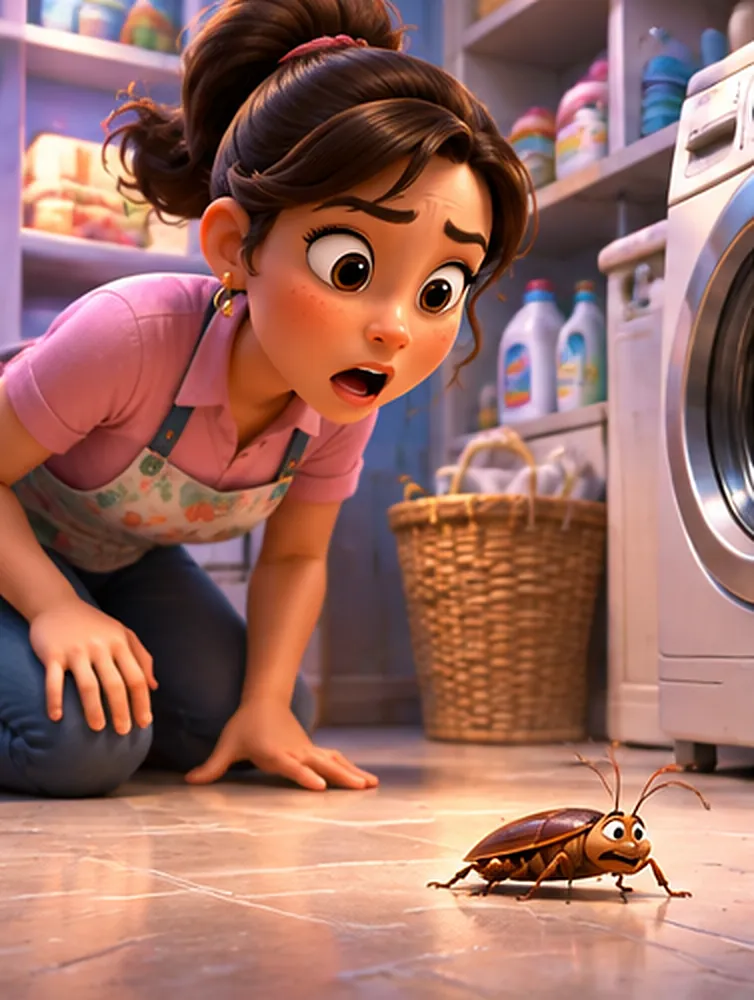
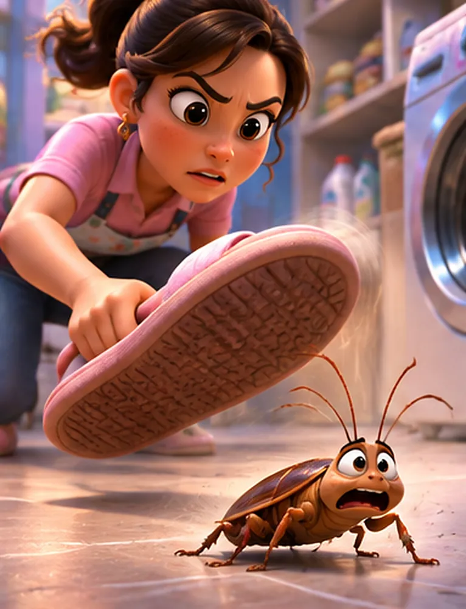
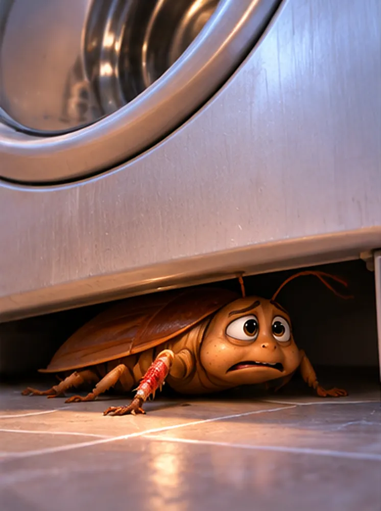
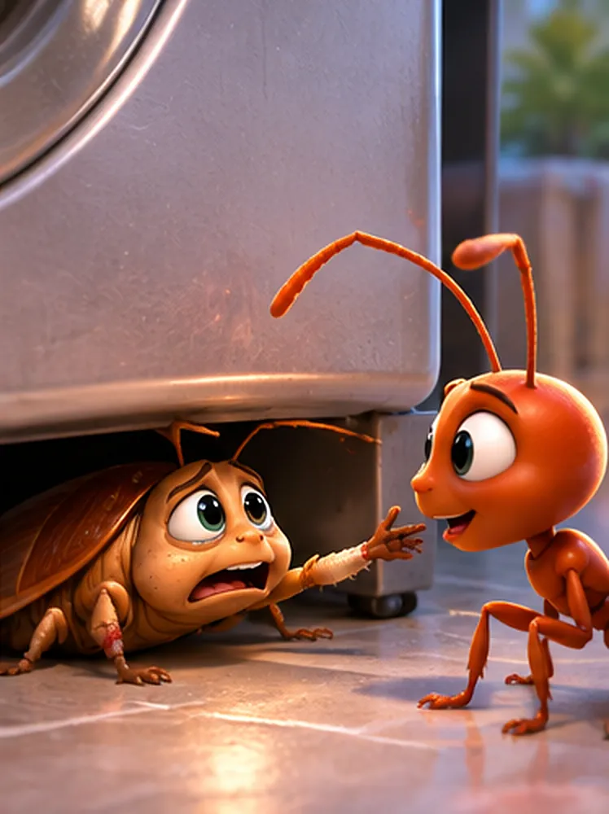
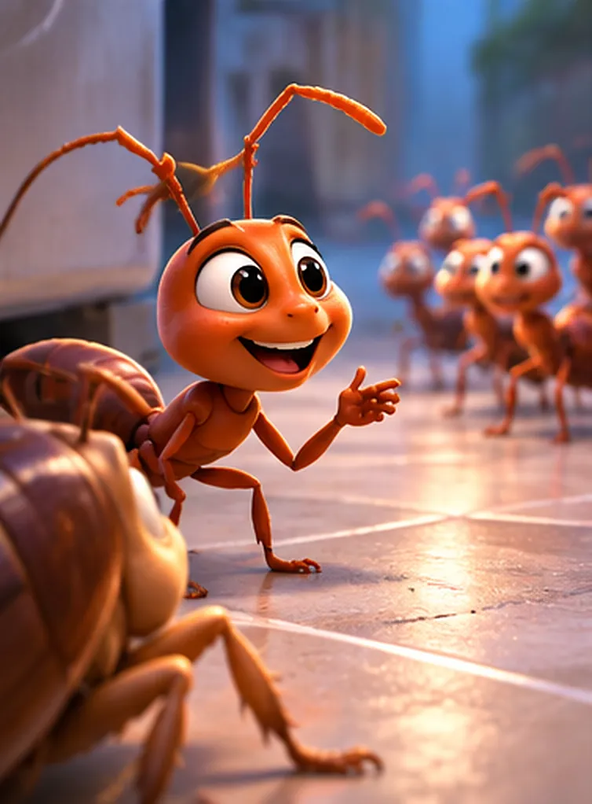
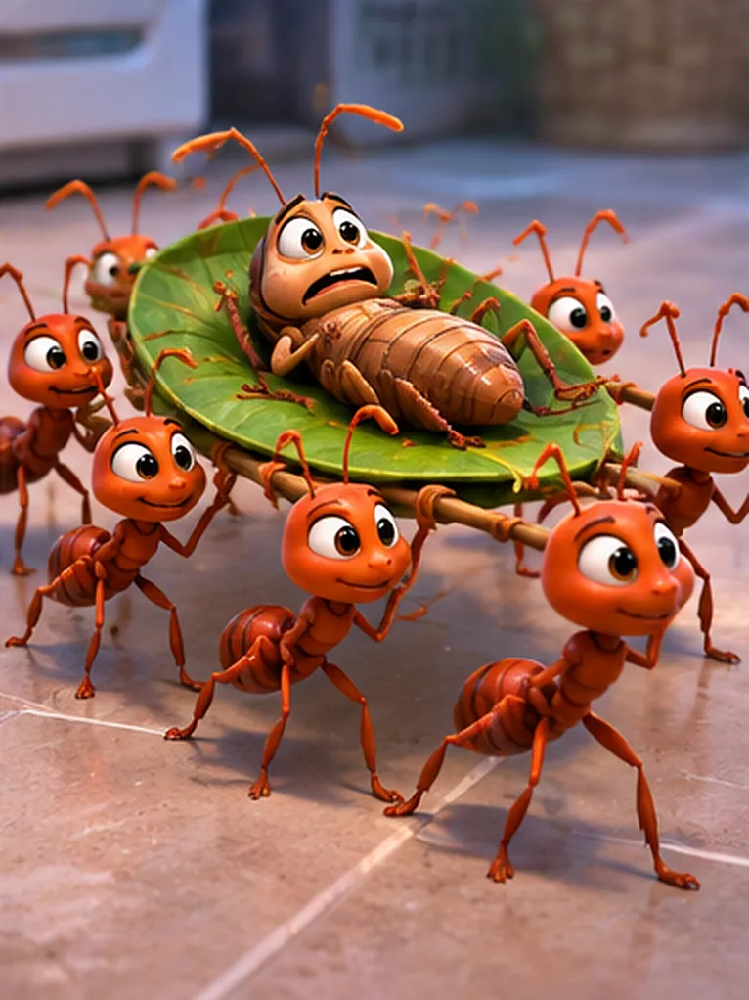
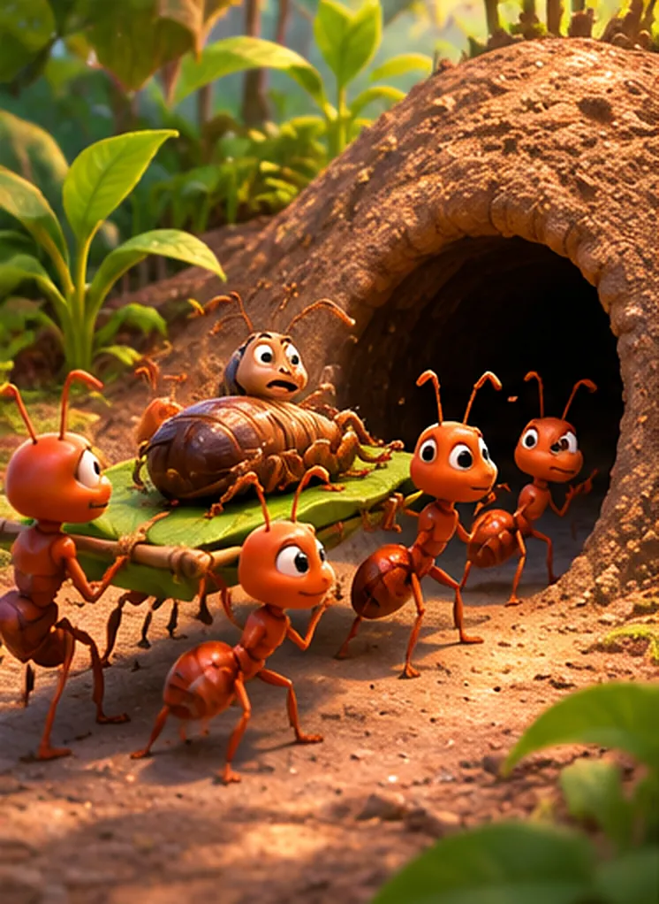
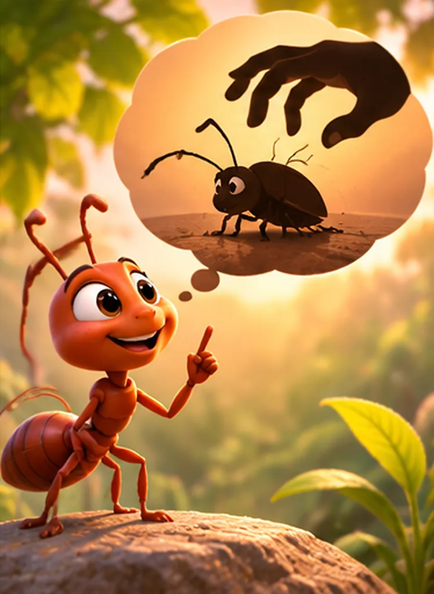

Una mañana, Danny entró a la lavandería con su canasta de ropa. De pronto, se quedó quieta: en medio del piso había una cucaracha mirándola con sus largas antenas.
—¡Ay, una cucaracha! —gritó Danny.

Danny se sacó la pantufla y, ¡zas!, intentó aplastarla. La cucaracha corrió lo más rápido que pudo, pero la pantufla alcanzó a golpearle una patita.
—¡Auxilio! ¡Mi patita! —chilló la cucaracha.

Cojeando, la cucaracha se metió debajo de la lavadora. Allí se quedó escondida, temblando y adolorida. Con la pata lastimada, no podía salir sola.
—¿Y ahora qué hago? No puedo caminar… —lloraba.

Al rato pasó por allí una hormiga. La cucaracha estiró su patita sana y le pidió ayuda.
—¡Ayúdame, ayúdame a salir de aquí, por favor!
—Tranquila… Si salir quieres, traeré a mis amigas —respondió la hormiga con una sonrisa.

La hormiga se fue corriendo y, muy pronto, volvió con una fila larguísima de hormigas. Todas sonreían y miraban a la cucaracha con mucha atención.
—¡Aquí estamos! Nosotras te llevaremos —dijo la hormiga.

Las hormigas pusieron a la cucaracha sobre una hoja grande, como si fuera una camilla, y la cargaron entre todas. La cucaracha estaba feliz: ¡por fin alguien la ayudaba!
—¡Gracias, amigas! ¿Adónde me llevan? —preguntó la cucaracha.
—A un lugar muy especial… —contestaron las hormigas.

Pero las hormigas no la llevaron a un lugar seguro. Caminaron y caminaron hasta la entrada de su hormiguero… ¡porque querían a la cucaracha para su cena! Ese fue el último día que alguien la vio.
—¿Su… hormiguero? —dijo la cucaracha, asustada. Pero ya era muy tarde.

La hormiga, sentada sobre una piedra, recordaba lo ocurrido. La cucaracha había escapado de la pantufla de Danny, pero no supo de quién cuidarse después.
—No todo el que te ofrece ayuda quiere ayudarte —pensó la hormiga.
Ten cuidado en quién confías. No todos los que te ofrecen ayuda lo hacen por tu bien: algunos solo buscan su propio provecho. Cuando tengas un problema, pide ayuda a las personas que conoces y te cuidan.